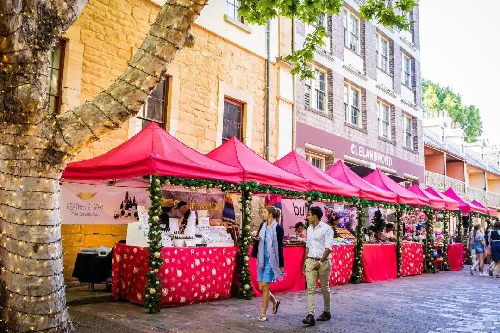

圣诞集市
圣诞集市起源于中世纪晚期德国和奥地利，
距现在已有七、八百年的历史。
按照基督教的风俗，
从前的圣诞市场在开张的那天晚上会由男孩子扮成基督进场，
重演基督降生的宗教故事。
圣诞市场通常在市政厅前的广场举办，
所有的饮食摊点都沿人行道向广场铺开，
出售的吃食和饮料都与圣诞节有关。
比如姜饼、甜蛋糕、加糖和作料的热红酒等德国传统圣诞饮食。
与圣诞装饰有关的圣诞树、小饰物，
用干树枝和干花编成的门前挂的圣诞花环、手工制成的蕾丝花边亚麻台布等也是常见的商品。
德国周边的国家法国、荷兰、比利时都有自己版本的圣诞集市。
德裔移民也将这个传统带到英国和美国。
东欧国家也开始效仿，
圣诞集市也从而演化成一种商业民俗。
